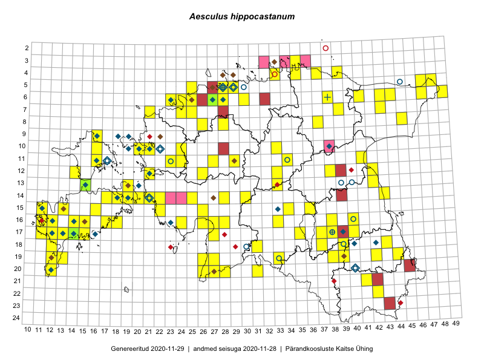

Aesculus hippocastanum
Uuendatud: 2016-12-07
Kaardile koondatud taksonid: Aesculus hippocastanum L.

Kaart põhineb 164 vaatlusel. Taime on leitud 90 ruudust.
| Ruut | Vaatleja(d) | Vaatlusaeg | Kirje tüüp | Viide andmebaasikirjele |
|---|---|---|---|---|
| 16-24 | Peedu Saar, Liina Oja | 2015-05-21 | punkt | vaata PlutoFis |
| 09-16 | Peedu Saar, Toomas Kukk | 2015-05-27 | ruut/ala | vaata PlutoFis |
| 14-28 | Toomas Kukk, Indrek Tammekänd | 2015-05-09 | ruut/ala | vaata PlutoFis |
| 10-16 | Peedu Saar, Toomas Kukk | 2015-05-26 | ruut/ala | vaata PlutoFis |
| 06-44 | Peedu Saar, Liina Oja | 2015-07-21 | punkt | vaata PlutoFis |
| 08-45 | Peedu Saar, Liina Oja | 2015-07-22 | punkt | vaata PlutoFis |
| 06-44 | Peedu Saar, Liina Oja | 2015-07-21 | ruut/ala | vaata PlutoFis |
| 08-45 | Peedu Saar, Liina Oja | 2015-07-22 | ruut/ala | vaata PlutoFis |
| 06-41 | Toomas Kukk, Tiit Hallikma | 2015-07-24 | ruut/ala | vaata PlutoFis |
| 11-29 | Toomas Kukk, Tiit Hallikma | 2015-06-11 | ruut/ala | vaata PlutoFis |
| 10-16 | Toomas Kukk, Peedu Saar | 2015-05-26 | punkt | vaata PlutoFis |
| 09-16 | Toomas Kukk, Peedu Saar | 2015-05-27 | punkt | vaata PlutoFis |
| 09-16 | Toomas Kukk, Peedu Saar | 2015-05-27 | punkt | vaata PlutoFis |
| 09-16 | Toomas Kukk, Peedu Saar | 2015-05-27 | punkt | vaata PlutoFis |
| 05-47 | Tiit Hallikma, Toomas Kukk | 2015-07-22 | ruut/ala | vaata PlutoFis |
| 05-47 | Tiit Hallikma, Toomas Kukk | 2015-07-22 | punkt | vaata PlutoFis |
| 04-37 | Rein Kalamees, Kersti Püssa | 2015-08-24 | ruut/ala | vaata PlutoFis |
| 06-41 | Tiit Hallikma, Toomas Kukk | 2015-07-24 | punkt | vaata PlutoFis |
| 10-33 | Thea Kull, Hannes Pehlak | 2015-05-10 | punkt | vaata PlutoFis |
| 11-41 | Peedu Saar | 2015-08-22 | ruut/ala | vaata PlutoFis |
| 14-25 | Indrek Tammekänd, Jaak Tammekänd | 2015-05-28 | punkt | vaata PlutoFis |
| 20-27 | Ott Luuk, Eerik Leibak, Liisa Rennel | 2015-05-20 | ruut/ala | vaata PlutoFis |
| 20-27 | Ott Luuk, Eerik Leibak, Liisa Rennel | 2015-05-20 | punkt | vaata PlutoFis |
| 05-48 | Meeli Mesipuu, Timo Luhamäe | 2015-07-23 | ruut/ala | vaata PlutoFis |
| 07-43 | Meeli Mesipuu, Timo Luhamäe | 2015-07-22 | ruut/ala | vaata PlutoFis |
| 11-16 | Eeva-Maria Jeletsky, Tarmo Niitla | 2015-06-19 | punkt | vaata PlutoFis |
| 11-16 | Eeva-Maria Jeletsky, Tarmo Niitla | 2015-06-19 | ruut/ala | vaata PlutoFis |
| 12-14 | Eeva-Maria Jeletsky, Tarmo Niitla | 2015-06-25 | punkt | vaata PlutoFis |
| 12-14 | Eeva-Maria Jeletsky, Tarmo Niitla | 2015-06-25 | ruut/ala | vaata PlutoFis |
| 16-33 | Maria Abakumova | 2015-06-09 | ruut/ala | vaata PlutoFis |
| 05-28 | Erkki Otsman, Sergei Smirnov | 2015-06-26 | ruut/ala | vaata PlutoFis |
| 11-41 | Meeli Mesipuu, Maret Gerz | 2015-05-14 | ruut/ala | vaata PlutoFis |
| 11-41 | Meeli Mesipuu, Maret Gerz | 2015-05-14 | punkt | vaata PlutoFis |
| 15-11 | Mari Reitalu, Triin Reitalu | 2015-09-17 | ruut/ala | vaata PlutoFis |
| 17-12 | Mari Reitalu | 2015-06-07 | ruut/ala | vaata PlutoFis |
| 17-12 | Mari Reitalu | 2015-06-07 | punkt | vaata PlutoFis |
| 05-29 | Erkki Otsman, Sergei Smirnov | 2015-07-12 | ruut/ala | vaata PlutoFis |
| 16-12 | Mari Reitalu | 2015-08-23 | ruut/ala | vaata PlutoFis |
| 20-26 | Indrek Tammekänd | 2015-05-15 | punkt | vaata PlutoFis |
| 20-28 | Indrek Tammekänd | 2015-05-16 | punkt | vaata PlutoFis |
| 19-27 | Indrek Tammekänd | 2015-05-16 | punkt | vaata PlutoFis |
| 15-26 | Indrek Tammekänd | 2015-05-12 | ruut/ala | vaata PlutoFis |
| 18-37 | Karin Kikas, Elle Rajandu | 2015-04-22 | ruut/ala | vaata PlutoFis |
| 22-42 | Karin Kikas, Elle Rajandu | 2015-05-25 | ruut/ala | vaata PlutoFis |
| 22-42 | Karin Kikas, Elle Rajandu | 2015-05-25 | punkt | vaata PlutoFis |
| 19-38 | Karin Kikas, Elle Rajandu | 2015-05-15 | punkt | vaata PlutoFis |
| 19-39 | Karin Kikas, Elle Rajandu | 2015-05-15 | ruut/ala | vaata PlutoFis |
| 19-39 | Karin Kikas, Elle Rajandu | 2015-05-15 | punkt | vaata PlutoFis |
| 18-12 | Mari Reitalu, Sirje Azarov, Oliver Parrest | 2015-08-02 | ruut/ala | vaata PlutoFis |
| 15-13 | Mari Reitalu, Oliver Parrest | 2015-05-14 | ruut/ala | vaata PlutoFis |
| 06-43 | Meeli Mesipuu, Liina Oja | 2015-04-26 | ruut/ala | vaata PlutoFis |
| 06-43 | Meeli Mesipuu, Liina Oja | 2015-04-26 | punkt | vaata PlutoFis |
| 16-26 | Indrek Tammekänd | 2015-05-11 | ruut/ala | vaata PlutoFis |
| 19-12 | Oliver Parrest | 2015-05-16 | ruut/ala | vaata PlutoFis |
| 20-12 | Mari Reitalu, Oliver Parrest | 2015-05-26 | ruut/ala | vaata PlutoFis |
| 16-18 | Mari Reitalu, Sirje Azarov | 2015-05-16 | ruut/ala | vaata PlutoFis |
| 16-18 | Mari Reitalu, Sirje Azarov | 2015-05-16 | punkt | vaata PlutoFis |
| 06-44 | Liina Oja, Meeli Mesipuu | 2015-04-25 | ruut/ala | vaata PlutoFis |
| 13-42 | Karin Kikas, Elle Rajandu | 2015-05-19 | ruut/ala | vaata PlutoFis |
| 13-42 | Karin Kikas, Elle Rajandu | 2015-05-19 | punkt | vaata PlutoFis |
| 13-42 | Karin Kikas, Elle Rajandu | 2015-05-19 | punkt | vaata PlutoFis |
| 19-42 | Kirsi Loide, Marje Loide | 2015-07-29 | ruut/ala | vaata PlutoFis |
| 14-43 | Karin Kikas, Elle Rajandu | 2015-05-18 | ruut/ala | vaata PlutoFis |
| 14-43 | Karin Kikas, Elle Rajandu | 2015-05-18 | punkt | vaata PlutoFis |
| 16-11 | Triin Reitalu, Mari Reitalu | 2015-08-09 | punkt | vaata PlutoFis |
| 17-11 | Mari Reitalu, Triin Reitalu | 2015-08-05 | ruut/ala | vaata PlutoFis |
| 05-48 | Timo Luhamäe, Meeli Mesipuu | 2015-07-23 | punkt | vaata PlutoFis |
| 06-44 | Timo Luhamäe, Eerik Leibak | 2015-05-30 | ruut/ala | vaata PlutoFis |
| 06-47 | Timo Luhamäe, Eerik Leibak | 2015-06-01 | ruut/ala | vaata PlutoFis |
| 14-18 | Karin Kikas, Elle Rajandu | 2015-07-21 | ruut/ala | vaata PlutoFis |
| 11-16 | Meeli Mesipuu, Timo Luhamäe | 2015-05-28 | ruut/ala | vaata PlutoFis |
| 17-27 | Meeli Mesipuu | 2015-05-21 | ruut/ala | vaata PlutoFis |
| 05-25 | Mari Metsoja, Jaak-Albert Metsoja | 2015-07-30 | ruut/ala | vaata PlutoFis |
| 15-16 | Karin Kikas, Elle Rajandu | 2015-07-23 | ruut/ala | vaata PlutoFis |
| 19-26 | Meeli Mesipuu | 2015-05-20 | punkt | vaata PlutoFis |
| 17-27 | Meeli Mesipuu | 2015-05-21 | punkt | vaata PlutoFis |
| 15-13 | Mari Reitalu, Oliver Parrest | 2015-05-14 | punkt | vaata PlutoFis |
| 16-17 | Karin Kikas | 2015-07-24 | punkt | vaata PlutoFis |
| 15-16 | Karin Kikas, Elle Rajandu | 2015-07-23 | punkt | vaata PlutoFis |
| 14-18 | Karin Kikas, Elle Rajandu | 2015-07-21 | punkt | vaata PlutoFis |
| 06-44 | Timo Luhamäe, Eerik Leibak | 2015-05-30 | punkt | vaata PlutoFis |
| 06-47 | Timo Luhamäe, Eerik Leibak | 2015-06-01 | punkt | vaata PlutoFis |
| 04-39 | Kaili Orav, Silvia Pihu | 2015-06-19 | ruut/ala | vaata PlutoFis |
| 11-16 | Meeli Mesipuu, Timo Luhamäe | 2015-05-28 | punkt | vaata PlutoFis |
| 04-39 | Kaili Orav, Silvia Pihu | 2015-06-19 | punkt | vaata PlutoFis |
| 18-31 | Ott Luuk, Indrek Tammekänd | 2015-05-22 | punkt | vaata PlutoFis |
| 18-31 | Ott Luuk, Indrek Tammekänd | 2015-05-22 | punkt | vaata PlutoFis |
| 20-31 | Ott Luuk, Indrek Tammekänd | 2015-05-22 | punkt | vaata PlutoFis |
| 13-19 | Kadri Tali | 2015-06-03 | ruut/ala | vaata PlutoFis |
| 12-21 | Hannes Pehlak | 2015-05-14 | ruut/ala | vaata PlutoFis |
| 06-44 | Meeli Mesipuu, Liina Oja | 2015-04-25 | punkt | vaata PlutoFis |
| 05-29 | Peedu Saar, Sander Laherand | 2013-07-07 | ruut/ala | vaata PlutoFis |
| 19-12 | Oliver Parrest | 2015-08-18 | ruut/ala | vaata PlutoFis |
| 19-13 | Oliver Parrest | 2015-07-01 | punkt | vaata PlutoFis |
| 20-12 | Oliver Parrest, Mari Reitalu | 2015-05-26 | punkt | vaata PlutoFis |
| 18-12 | Oliver Parrest, Mari Reitalu, Sirje Azarov | 2015-08-02 | punkt | vaata PlutoFis |
| 08-28 | Aat Sarv | 2015-05-10 | ruut/ala | vaata PlutoFis |
| 17-35 | Ott Luuk, Thea Kull | 2016-05-05 | ruut/ala | vaata PlutoFis |
| 17-37 | Helle Mäemets, Mare Leis | 2015-07-14 | punkt | vaata PlutoFis |
| 06-27 | Tõnu Ploompuu | 2015-08-11 | ruut/ala | vaata PlutoFis |
| 17-35 | Thea Kull, Ott Luuk | 2016-05-05 | punkt | vaata PlutoFis |
| 11-16 | Peedu Saar, Toomas Kukk | 2016-05-06 | punkt | vaata PlutoFis |
| 10-20 | Peedu Saar, Toomas Kukk | 2016-05-12 | punkt | vaata PlutoFis |
| 10-20 | Peedu Saar, Toomas Kukk | 2016-05-12 | punkt | vaata PlutoFis |
| 14-22 | Peedu Saar, Toomas Kukk | 2016-05-14 | punkt | vaata PlutoFis |
| 10-20 | Toomas Kukk, Peedu Saar | 2016-05-12 | ruut/ala | vaata PlutoFis |
| 14-22 | Toomas Kukk, Peedu Saar | 2016-05-14 | ruut/ala | vaata PlutoFis |
| 10-24 | Ott Luuk, Tiit Hallikma | 2016-05-12 | ruut/ala | vaata PlutoFis |
| 05-29 | Peedu Saar | 2016-05-24 | punkt | vaata PlutoFis |
| 05-29 | Peedu Saar | 2016-05-24 | ruut/ala | vaata PlutoFis |
| 11-23 | Ott Luuk, Tiit Hallikma | 2016-05-14 | ruut/ala | vaata PlutoFis |
| 11-23 | Ott Luuk | 2016-05-14 | punkt | vaata PlutoFis |
| 10-24 | Tiit Hallikma, Ott Luuk | 2016-05-12 | punkt | vaata PlutoFis |
| 06-28 | Toomas Kukk | 2016-06-06 | punkt | vaata PlutoFis |
| 10-21 | Tõnu Ploompuu | 2015-05-02 | ruut/ala | vaata PlutoFis |
| 21-41 | Vivika Väli, Ülo Väli | 2015-05-09 | ruut/ala | vaata PlutoFis |
| 11-27 | Andrus Jair, Tõnu Ploompuu | 2015-05-17 | ruut/ala | vaata PlutoFis |
| 19-42 | Ott Luuk, Sander Laherand | 2016-06-17 | ruut/ala | vaata PlutoFis |
| 12-38 | Eeva-Maria Jeletsky, Tarmo Niitla | 2016-06-10 | ruut/ala | vaata PlutoFis |
| 12-38 | Eeva-Maria Jeletsky, Tarmo Niitla | 2016-06-10 | punkt | vaata PlutoFis |
| 12-42 | Eeva-Maria Jeletsky, Tarmo Niitla | 2016-06-04 | ruut/ala | vaata PlutoFis |
| 12-42 | Eeva-Maria Jeletsky, Tarmo Niitla | 2016-06-04 | punkt | vaata PlutoFis |
| 19-44 | Peedu Saar, Tarmo Niitla | 2016-06-15 | punkt | vaata PlutoFis |
| 18-43 | Liina Oja, Maret Gerz | 2016-06-17 | punkt | vaata PlutoFis |
| 18-43 | Vivika Väli, Ülo Väli | 2015-07-14 | ruut/ala | vaata PlutoFis |
| 18-43 | Maret Gerz, Liina Oja | 2016-06-17 | ruut/ala | vaata PlutoFis |
| 06-28 | Toomas Kukk | 2016-07-04 | ruut/ala | vaata PlutoFis |
| 06-28 | Toomas Kukk | 2016-07-04 | punkt | vaata PlutoFis |
| 06-25 | Toomas Kukk, Sander Laherand | 2016-07-05 | ruut/ala | vaata PlutoFis |
| 19-42 | Sander Laherand, Ott Luuk | 2016-06-15 | punkt | vaata PlutoFis |
| 12-21 | Liina Oja, Rein Kalamees | 2016-07-05 | punkt | vaata PlutoFis |
| 11-24 | Aat Sarv | 2016-07-09 | ruut/ala | vaata PlutoFis |
| 19-44 | Tarmo Niitla, Peedu Saar | 2016-06-15 | ruut/ala | vaata PlutoFis |
| 12-33 | Tõnu Ploompuu, Marko Veinbergs, Eerik Leibak | 2016-07-22 | ruut/ala | vaata PlutoFis |
| 12-33 | Tõnu Ploompuu, Marko Veinbergs, Eerik Leibak | 2016-07-22 | punkt | vaata PlutoFis |
| 06-25 | Sander Laherand, Toomas Kukk | 2016-07-05 | punkt | vaata PlutoFis |
| 06-25 | Sander Laherand, Nele Jõessar | 2016-08-01 | punkt | vaata PlutoFis |
| 15-22 | Sirje Azarov, Meeli Mesipuu | 2016-07-04 | punkt | vaata PlutoFis |
| 16-38 | Rein Kalamees, Kersti Püssa | 2016-07-19 | ruut/ala | vaata PlutoFis |
| 07-39 | Liina Oja, Meeli Mesipuu | 2016-07-29 | punkt | vaata PlutoFis |
| 03-35 | Sander Laherand, Ott Luuk, Nele Jõessar | 2016-07-26 | punkt | vaata PlutoFis |
| 15-16 | Meeli Mesipuu, Maret Gerz | 2016-08-13 | ruut/ala | vaata PlutoFis |
| 15-16 | Meeli Mesipuu, Maret Gerz | 2016-08-13 | punkt | vaata PlutoFis |
| 14-25 | Indrek Tammekänd | 2016-08-11 | punkt | vaata PlutoFis |
| 14-30 | Hannes Pehlak, Tõnu Ploompuu, Marko Veinbergs | 2016-07-21 | ruut/ala | vaata PlutoFis |
| 14-19 | Mari Reitalu | 2014-05-24 | ruut/ala | vaata PlutoFis |
| 14-17 | Peedu Saar, Ott Luuk | 2016-08-29 | punkt | vaata PlutoFis |
| 13-19 | Mari Reitalu | 2014-05-24 | ruut/ala | vaata PlutoFis |
| 06-38 | Tõnu Ploompuu | 2016-07-17 | ruut/ala | vaata PlutoFis |
| 16-12 | Mari Reitalu | 2016-10-04 | ruut/ala | vaata PlutoFis |
| 08-26 | Meeli Mesipuu, Thea Kull | 2016-05-12 | ruut/ala | vaata PlutoFis |
| 08-26 | Meeli Mesipuu, Thea Kull | 2016-05-12 | punkt | vaata PlutoFis |
| 14-19 | Meeli Mesipuu | 2016-06-29 | ruut/ala | vaata PlutoFis |
| 14-17 | Ott Luuk, Peedu Saar | 2016-08-29 | ruut/ala | vaata PlutoFis |
| 06-30 | Kadi-Liis Kesler, Tiina Elvisto | 2015-06-27 | ruut/ala | vaata PlutoFis |
| 14-19 | Meeli Mesipuu | 2016-06-29 | punkt | vaata PlutoFis |
| 07-39 | Meeli Mesipuu, Liina Oja | 2016-07-29 | ruut/ala | vaata PlutoFis |
| 15-22 | Meeli Mesipuu, Sirje Azarov | 2016-07-04 | ruut/ala | vaata PlutoFis |
| 06-30 | Kadi-Liis Kesler, Tiina Elvisto | 2015-05-26 | ruut/ala | vaata PlutoFis |
| 03-35 | Ott Luuk, Sander Laherand, Nele Jõessar | 2016-07-26 | ruut/ala | vaata PlutoFis |
| 04-35 | Ott Luuk, Sander Laherand, Nele Jõessar | 2016-07-26 | punkt | vaata PlutoFis |
| 12-26 | Jaak-Albert Metsoja, Mari Metsoja | 2016-07-05 | ruut/ala | vaata PlutoFis |
| 06-24 | Jaak-Albert Metsoja, Mari Metsoja, Ott Luuk | 2015-06-05 | punkt | vaata PlutoFis |
| 06-23 | Jaak-Albert Metsoja, Mari Metsoja, Ott Luuk | 2015-06-04 | punkt | vaata PlutoFis |